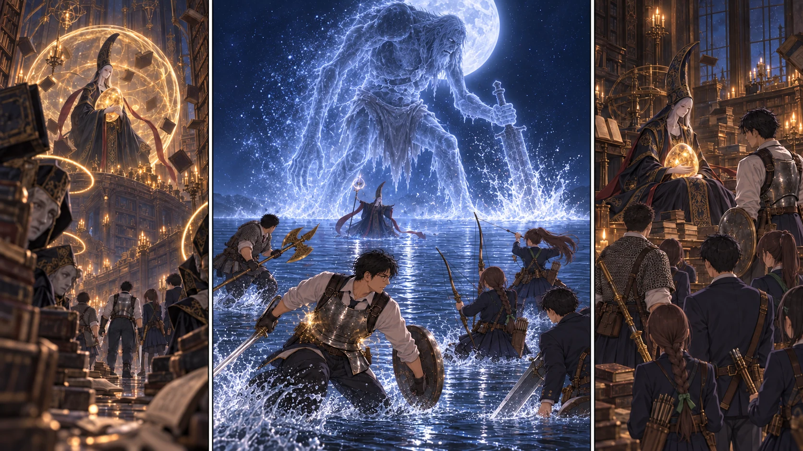

DAY52 / TURN1−62
月は、母の顔をしていた。

悠「先生、まだです。光が、曲がってくる！」
【DAY51・夕｜一つだけ、備えを増やす】大扉を開く前に、いったん戻った。討論室から教会へ帰り、先生はメリナの案内で円卓を訪れる。コリンが教えた魔力防護は、自分の身体を守る祈祷だった。「仲間に掛けるものでは、ないんだな」。指の聖印を掌で確かめる。一人分でも、前に立つ時間を少し伸ばせる。術と聖印を購入し、詠唱を練習してから休んだ。
【DAY52・朝｜扉の外にも、役目がある】十三人は討論室へ戻る。陸と蓮は外の連絡と帰路を受け持ち、先生と十人が大書庫に入った。大地はハルバードを両手で持ち、直人は大剣の柄を確かめる。花と千夏は左右へ。盾役の陽太と健太は、後ろへ下がる人の道を空けた。
【大書庫｜歌っているのは、誰】最初に見えたのは、本ではなく目だった。低い書棚の隙間から、学生がこちらを見上げている。薄い頬に蝋燭の明かりが揺れ、唇が歌の形を作っていた。別の棚の下からも、同じ旋律が聞こえる。膝元へ滑ってきた本を陽太が靴で止めると、その向こうの顔がゆっくり笑った。
美しい、と思ってしまったことが怖かった。磨かれた床、幾段もの回廊、埃の中を泳ぐ金色の光。その光の上で、女王は琥珀の卵を抱いている。こちらへ向ける顔より、卵へ落とす指の方がずっと優しかった。ギデオンの言葉がよみがえる。大ルーンがあるのは、彼女自身ではなく、その卵。地図の印だったものが、誰かの手放せないものに変わっていた。
金色の輪を帯びた学生を花が見つけた。先読みの記憶と、いま見える光が一致する。健太が飛んでくる本を受け、陽太が踏み込む。狙うのは歌を支える三人。一人の歌が途切れると、光は別の場所へ移った。床を這う影に視線を取られた瞬間、陽太の肩へ硬い本がぶつかった。健太が前へ出る。陽太は赤い瓶を飲み、今度は足元も見た。
三つ目の声が止まる。頭上の金色が割れ、女王が降ってきた。直人と大地が接近し、先生が前へ出る。攻撃が届いた。卵を抱く腕が縮まり、歌が乱れた。その光景に、紬の指が止まりかける。だが、次の本が飛んでくる。救いたいと思うことと、目の前の攻撃を見失わないことは、同時にしなければならなかった。
【声｜母の眠りに】暗がりから女の声が響いた。母の眠りを侵す者を拒む、冷たい声。先生が顔を上げたとき、書棚の輪郭がほどけた。床が夜を映す水面になり、頭上へ満月が現れる。卵を抱いて倒れた女王ではない。杖を掲げ、こちらを見据えるレナラが、月の下に立っていた。
【月夜｜逃げる向きを揃えない】青白い光が杖の先へ集まる。先生が横へ走り、後ろの班は反対へ散る。太い光の奔流が、さっきまで立っていた水面を貫いた。直人が前へ出て注意を引く間に、先生は聖印を握る。薄い光が、自分の鎧にだけ落ちた。大地も黄金のハルバードを掲げる。先生、大地、直人の三人を、短い誓いの光が包んだ。
先生が再び間合いへ入る。レナラの向きが変わり、横から直人が斬り込む。花と千夏の矢が、互いの射線を避けて飛んだ。けれど魔術は、最初に向いていた場所へ飛ぶだけではなかった。先生が一歩止まったとき、悠が叫ぶ。「先生、まだです。光が、曲がってくる！」。遅れて追いついた光が肩をかすめた。防護の内側にも痛みは届いた。先生は距離を作り、赤い瓶を使った。
悠は自分の杖を握ったまま、次の詠唱を見た。得意な魔力弾を撃ち続けても、相手には効きにくい。悔しかった。それでも、先生が避けた場所を見て、次に光が曲がる方向を指した。拓海が後方へ伝える。二人の声が、杖から放つものとは違う形で、前へ届いた。
【召喚｜追わない時間】女王の呼び声に応えて、巨人の影が立ち上がった。背が、月を隠す。大地が一歩踏みかけ、直人の合図で止まる。いま斬り込めば届く。だが、自分が踏み込む場所には、次の一撃が落ちる。巨人が武器を振り下ろし、水面が白く跳ねた。盾を並べて受け止める者はいなかった。
先生は女王の動きを追いながら横へ離れ、前衛も弓隊も、それぞれに距離を取る。巨人を囲まない。追いつこうともしない。弓を引いた千夏は、味方が横切るのを見て弦を戻した。待つ時間は、戦っていない時間ではなかった。やがて巨人の輪郭が薄くなる。その向こうに、レナラが見えた。
大地と直人が、今度こそ踏み込んだ。先生が正面に残り、二人は違う角度から武器を振る。花の矢がその隙間を通った。黄金の穂先と大剣が届き、月の女王の輪郭が崩れる。先生の防護の光も、もう薄れていた。最後まで同じ構えを続けて勝ったのではない。離れ、待ち、互いに動ける瞬間を渡して、そこまで来た。
【大書庫｜勝っても、終わらない歌】水の感触が消えた。戻ってきたのは、蝋燭と本の匂いだった。レナラはそこにいた。卵を抱き、こちらとは違う何かへ話しかけている。誰も、とどめを刺そうとはしなかった。手にした産まれなき者の大ルーンは、二つ目。その重みを確かめても、先生にはすぐに歓声が出なかった。
陽太が自分の肩を動かし、健太の顔を見る。「……立ってるな、俺ら」。そこではじめて、花が息を吐いた。外で待っていた陸と蓮を呼び、十三人の顔を数える。全員いた。大書庫の祝福は場所を記録し、まだ触れずに残した。帰って休む場所は、すでに討論室にある。
【帰路】討論室で回復してから、登録済みの教会へ戻る。結衣へ勝利を報告すると、最初に返ってきたのは人数の確認だった。先生が十三人と答える。待っていた二十人の間から、ようやく声が上がった。悠は食器を受け取りながら、まだ魔術の曲がる軌道を指でなぞっていた。今日、彼がいちばん役に立った瞬間には、杖の先から何も出ていなかった。
【同じ日・教会】狩猟当番は鹿二頭を持ち帰り、航と亮は使った矢を二本ずつ記録した。取水は二往復。煮沸と冷却を待つ間、補修班は壁際の資材を雨に濡れない位置へ寄せた。二十四食分の肉に九食を買い足し、その日の三十三人分を配る。戻った遠征隊の席にも、温かいものが用意されていた。
【判定・収支】結界3+3+3=9／月夜2+5+2=9／召喚4+3+3=10。第二形態の進捗1+2=3で勝利。陽太と先生は軽傷を赤瓶各一回で回復。自然2は出ず、立て直し判定なし。基地6+4+3=13。魔力防護と指の聖印430、補食9を支出し、レナラ4000と狩猟4を加えて残6166ルーン。矢270本、飲用1.5L、原水0L。新死亡0。DAY52 18:30、全三十三人が教会へ帰還。
今回の判定記録
| 判定 | 出目 | 補正 | 合計 |
|---|
| 金色の詠唱学生3人の歌を中断し結界を落とす | 3+3 | 3 | 9 |
| 第二形態の直線魔術をかわして接近 | 2+5 | 2 | 9 |
| 一時召喚をやり過ごし物理攻撃を重ねる | 4+3 | 3 | 10 |
| base | 6+4 | 3 | 13 |
抽選前の条件 · 抽選結果原作参照と卓独自ルール · 条件表記の訂正記録